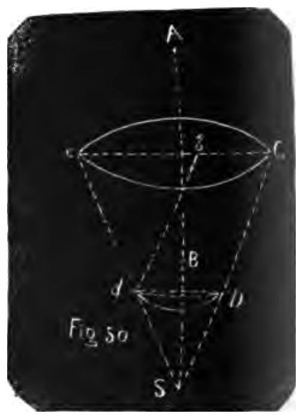

§ 112: Intersezione di due rette virtuali e inversione circolare (Fig. 49–50)¶
112. Prob. Dati due punti \(A, B\) d’una retta (fig. 49 e 50), e due punti \(C, D\) d’un’altra; trovare il punto \(S\) dove si tagliano.
Sol. Coi due punti d’una delle due rette; per esempio coi
f. 0087 · p. 62punti \(A\) e \(B\) presi per centri, e colle distanze rispettive di essi punti \(AC, AD; BC, BD\) dai due punti dell’altra retta \(C, D\) prese per raggi, si descrivano quattro archi, due dei quali si tagliano in \(C\) e \(c\), e due in \(D\) e \(d\).
Si trovi il quarto punto \(\delta\) del parallelogrammo \(CDd\delta\) col fare a \(Dd = C\delta\); a \(DC = d\delta\) (§ 11).
Si trovi la quarta proporzionale alle tre \(c\delta, CD, Cc\). Con questa presa per raggio, e coi centri \(C\) e \(c\) si descrivano due archi, che si taglino in \(S\). Sarà \(S\) il punto dell’intersezione delle due rette \(AB, CD\).
Dim. Le rette \(AB, Cc\) saranno perpendicolari una all’altra (§ 13, 14); così pure le \(AS, Cc\). Dunque il punto \(S\) sarà nella stessa \(AB\). Essendo poi la \(AB\), ossia \(AS\) perpendicolare anche alla \(Dd\) (§ 13, 14), sarà la stessa \(Dd\) parallela alla \(Cc\) (29, lib. I). Ma pei lati eguali tra loro nei due triangoli \(dC\delta, dCD\) si hanno gli angoli \(dC\delta, CdD\) eguali (8, lib. I). Dunque sono parallele anche le due \(C\delta, Dd\) (28, lib. I). Dunque i punti \(c, C, \delta\) sono nella stessa retta. Ora a cagione dei due lati eguali nei due triangoli \(CBA, cBA\) si avranno eguali gli angoli \(CBA, cBA\) (8, lib. I). Per la stessa ragione nei triangoli \(ABD, ABd\) si trovano eguali gli angoli \(ABD, ABd\). Dunque nella Figura 49 l’angolo \(cBd\), che è la somma dei due \(cBA, ABd\), sarà eguale all’angolo \(CBD\), somma dei due \(CBA, ABD\). Nella Figura 50 poi l’angolo \(cBd\), che è la differenza dei due \(ABd, cBA\), sarà pure eguale all’angolo \(CBD\), che è la differenza dei due \(ABD, CBA\). In tutte due le Figure adunque nei due triangoli \(cBd, CBD\), che hanno due



lati e l’angolo compreso eguale, sarà il terzo lato \(cd\) eguale al terzo \(CD\) (4, lib. I). Ma \(CD = d\delta\). Dunque il triangolo \(cd\delta\) è isoscele. È poi isoscele anche il triangolo \(cCS\), e si ha la proporzione: la \(c\delta\) alla \(CD\), ovvero alla \(d\delta\), come la \(Cc\) alla \(CS\); onde viene ancora \(c\delta : cd :: cC : cS\). Dunque i due triangoli \(c\delta d, cCS\) hanno gli angoli eguali tra loro (5, lib. VI). Quindi essendo l’angolo \(c\delta d = cCS\); sarà la \(CS\) parallela alla \(\delta d\) (29, lib. I), alla quale essendo pur parallela la \(CD\), sarà in essa il punto \(S\). Dunque ecc.